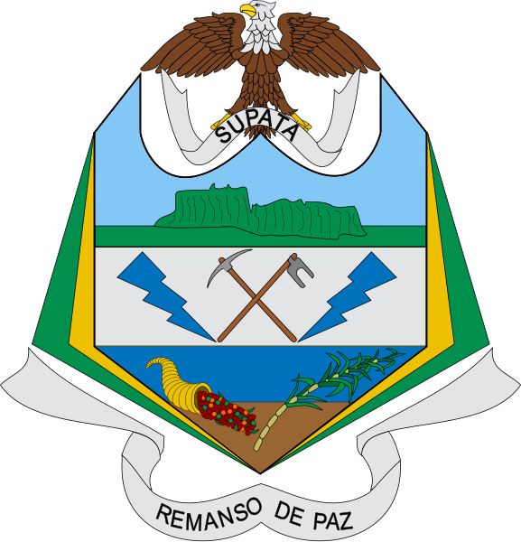

Historia de Supatá
Origen y Fundación:
Características distintivas:
Bandera
Diseñador: Luis Felipe Guerra, adoptada en 1954 mediante el Acuerdo No. 01 de febrero 19 de 2002.
La bandera consta de dos franjas horizontales (verde y amarillo). La franja verde representa la productividad agrícola, mientras que el amarillo manifiesta la riqueza de las tierras y los valores morales de su gente.
Escudo
Diseñador: Rubén Fernel Gómez Pulido, adoptado en 2002 mediante el Acuerdo No. 01.
- El Águila: Simboliza la libertad y el respeto del territorio.
- Centro: Representa características del municipio, con herramientas de trabajo agrícola y símbolos de sus productos principales: ganadería, café y caña de azúcar.
- Cinta: El emblema "Remanso de Paz" identifica a Supatá como un lugar apacible.
Himno
Coro:
Descendientes de Muiscas orfebres
Forjadores de nuestra heredad,
Supateños alegres cantemos
Este himno a un “Remanso de Paz” (BIS)
Te admiramos oculto cual grandiosa perla
Dormir bajo la cima del Tablazo
Arrullado por aves de la selva
Y cubiertos por tintes del ocaso.
Fecunda con amor tu entraña pura
Arroyos que pregonan tu riqueza
El ganado y el café son el sustento
De gente activa, trabajadora y con nobleza.
En el Templo que guarda nuestros rezos
La Virgen de la Salud nos ilumina
De su fe, todos somos pregoneros
Luchando por la paz y el progreso.
Coro: Este himno a un “Remanso de Paz” … (BIS)
Lugares Turísticos
Cultura y Tradiciones
Supatá, con su rica historia y su entorno natural privilegiado, ha forjado una cultura única, donde se entrelazan tradiciones ancestrales y costumbres más recientes.
Raíces Indígenas y Colonialismo
Fiestas y Celebraciones
Música y Danzas
Gastronomía
Artesanía
Valores y Costumbres
En resumen, la cultura de Supatá es un rico mosaico de tradiciones, costumbres y valores que han sido transmitidos de generación en generación. Si tienes la oportunidad de visitar este hermoso municipio, no dudes en sumergirte en su ambiente acogedor y disfrutar de su rica cultura.
Eventos y Festivales
Supatá es un municipio vibrante con una variedad de eventos y festivales que reflejan su rica cultura y tradiciones. Aquí te menciono algunos de los más destacados:
Feria Comercial y Agropecuaria
Fecha: Del 27 de junio al 1 de julio de 2024.Descripción: Este evento es uno de los más importantes de la región, con actividades como alboradas, cabalgatas, ferias ganaderas, presentaciones musicales, concursos y exposiciones ganaderas. Es una semana llena de actividades culturales, deportivas y musicales.
Fiesta Patronal de San Miguel Arcángel
Fecha: 29 de septiembre.Descripción: Esta festividad en honor al santo patrono del municipio incluye desfiles, concursos, bailes típicos y eventos religiosos. Es una celebración llena de alegría y tradición que atrae a muchos visitantes.
Eventos Culturales y Deportivos
Descripción: Durante todo el año, la Casa de la Cultura organiza exposiciones artísticas, talleres y eventos culturales que resaltan la identidad local. Además, hay competencias deportivas y desafíos que fomentan la participación de la comunidad.Actividades al Aire Libre
Descripción: Supatá es conocido por sus paisajes naturales, lo que lo convierte en un lugar ideal para caminatas ecológicas, senderismo y rutas en bicicleta. Estos eventos suelen estar acompañados de actividades recreativas y educativas sobre la biodiversidad local.Gastronomía Típica
La gastronomía de Supatá es una deliciosa representación de la cocina tradicional colombiana, con platos que reflejan la riqueza cultural y los sabores auténticos de la región. Aquí te menciono algunos de los más destacados:
Platos Típicos
- Gallina Criolla: Este plato es muy popular en la región. Se prepara con gallina de campo, cocida lentamente con especias y hierbas locales, lo que le da un sabor único y delicioso.
- Mute Santafereño: Una sopa tradicional hecha a base de maíz, carne de res, cerdo, yuca, papa y otros vegetales. Es un plato muy nutritivo y reconfortante, perfecto para los días fríos.
- Tamal Cundinamarqués: Este tamal es una especialidad de la región de Cundinamarca. Se elabora con masa de maíz rellena de carne de cerdo, pollo, zanahoria, arvejas y otros ingredientes, envuelto en hojas de plátano y cocido al vapor.
- Chicha: Una bebida fermentada a base de maíz, tradicional en muchas regiones de Colombia. Tiene un sabor ligeramente dulce y es muy refrescante.
- Aguapanela con Queso: Una bebida caliente hecha con panela (azúcar de caña sin refinar) disuelta en agua, servida con trozos de queso. Es muy popular en las zonas rurales y perfecta para acompañar las comidas.
- Arequipe: Un dulce de leche muy popular en Colombia, que se puede disfrutar solo o como relleno de otros postres.
- Brevas con Arequipe: Higos cocidos en almíbar y servidos con arequipe, una combinación deliciosa y tradicional. Estos platos y bebidas no solo son deliciosos, sino que también ofrecen una ventana a la cultura y las tradiciones de Supatá.
Clima y Geografía
Clima de Supatá
Supatá tiene un clima templado y agradable durante todo el año. Aquí algunos detalles:
- Temperatura: La temperatura promedio varía entre 12°C y 23°C1. Los veranos son cortos y cómodos, mientras que los inviernos son frescos y húmedos.
- Precipitación: La región recibe una cantidad significativa de lluvia, especialmente durante los meses de abril a noviembre. Esto contribuye a la exuberante vegetación y los paisajes verdes del área.
- Mejor Época para Visitar: Según la puntuación de turismo, la mejor época para visitar Supatá es desde principios de junio hasta principios de septiembre, cuando el clima es más cálido y seco.
Supatá está ubicado en el departamento de Cundinamarca, en la provincia de Gualivá. Aquí algunos aspectos geográficos clave:
- Altitud: El municipio se encuentra a una altitud promedio de 1,798 metros sobre el nivel del mar.
- Superficie: Supatá abarca una superficie de aproximadamente 128 km².
- Ubicación: Está situado a unos 76 km al noroccidente de Bogotá, lo que lo hace accesible para una escapada de fin de semana desde la capital.
- Paisajes Naturales: La región es conocida por sus montañas, ríos y más de 50 cascadas, lo que la convierte en un destino ideal para actividades al aire libre como senderismo y avistamiento de aves.
Economía Local
La economía de Supatá se basa principalmente en la agricultura y la ganadería. Aquí te detallo algunos aspectos clave:
Agricultura
- Cultivos Principales: Los cultivos más destacados incluyen maíz, papa, tomate y diversas hortalizas1. Estos productos son cultivados por pequeños productores agrícolas que forman la base de la economía local.
- Café: Aunque no es el cultivo principal, el café también se produce en la región y contribuye a la economía local.
- Producción de Lácteos y Cárnicos: La cría de bovinos y porcinos es significativa en Supatá. La producción de lácteos y cárnicos es una parte importante de la economía, con productos como leche, queso y carne.
- Atractivos Naturales: El turismo también juega un papel importante, gracias a los paisajes naturales, las cascadas y las actividades al aire libre como el senderismo y el avistamiento de aves. Estos atractivos atraen a visitantes y generan ingresos adicionales para la comunidad.
- Mercados y Ferias: Los mercados locales y las ferias comerciales, como la Feria Comercial y Agropecuaria, son eventos clave donde los agricultores y ganaderos pueden vender sus productos directamente a los consumidores.
Actividades al Aire Libre
Supatá es un destino ideal para los amantes de la naturaleza y las actividades al aire libre. Aquí te menciono algunas de las actividades más populares:
Caminatas Ecológicas y Senderismo
- Rutas Escénicas: Supatá ofrece diversas rutas de senderismo que atraviesan paisajes pintorescos, montañas y antiguos caminos reales. Estas caminatas permiten disfrutar de la flora y fauna local, así como de vistas impresionantes.
- Ventorrillo y Alto de la Cruz: Estas son algunas de las rutas más recomendadas, conocidas por sus hermosos parajes y la oportunidad de explorar la naturaleza en su estado más puro.
- Cascadas y Formaciones Rocosas: Supatá cuenta con varias cascadas y formaciones rocosas ideales para el torrentismo y el rappel. Actividades como estas son perfectas para los aventureros que buscan una dosis de adrenalina.
- Equipamiento y Seguridad: Las actividades de torrentismo y rappel se realizan con el equipo adecuado y bajo la supervisión de personal especializado, garantizando una experiencia segura y emocionante.
- Rutas en Bicicleta: Las rutas en bicicleta son otra excelente manera de explorar Supatá. Los caminos rurales y las rutas montañosas ofrecen desafíos para ciclistas de todos los niveles.
- Biodiversidad: La región es rica en biodiversidad, lo que la convierte en un lugar ideal para el avistamiento de aves. Los visitantes pueden observar una variedad de especies en su hábitat natural.
- Pozos Naturales: Además de las actividades más intensas, Supatá también ofrece lugares tranquilos para relajarse, como pozos naturales y ríos donde se puede nadar y disfrutar del entorno.
Flora, Fauna y Veredas
Supatá es un municipio con una biodiversidad impresionante, hogar de una variedad de especies de flora y fauna.
Flora
- Bosques y Vegetación: La región está cubierta por bosques montanos y vegetación de páramo, con una gran diversidad de plantas nativas.
- Orquídeas: Las orquídeas son especialmente abundantes y variadas en Supatá, con muchas especies endémicas que embellecen el paisaje.
- Rana Dorada de Supatá: Una de las especies más emblemáticas es la rana dorada (Andinobates supatá), conocida por su color dorado intenso y manchas grises en el vientre. Esta especie es única en el mundo y un símbolo de la biodiversidad local.
- Anfibios y Reptiles: Se han identificado 33 especies de anfibios y reptiles en la región, incluyendo lagartos, serpientes, salamandras y sapos.
- Aves: La diversidad de aves es notable, lo que hace de Supatá un lugar ideal para el avistamiento de aves.
Supatá está dividido en varias veredas, cada una con su propio encanto y características únicas:
- Vereda La Magola: Conocida por sus paisajes naturales y actividades agrícolas.
- Vereda Las Lajas: Famosa por sus cascadas y rutas de senderismo.
- Vereda Mesitas: Un área histórica que conserva tradiciones y arquitectura colonial.